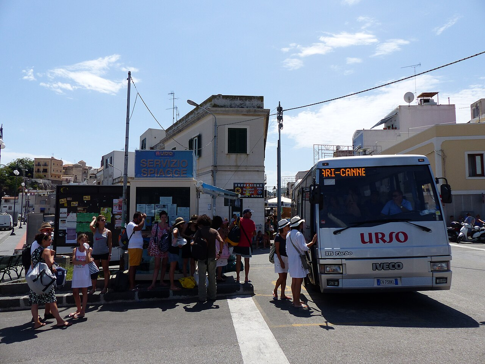
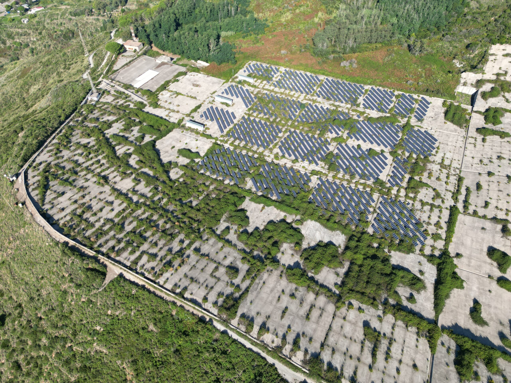
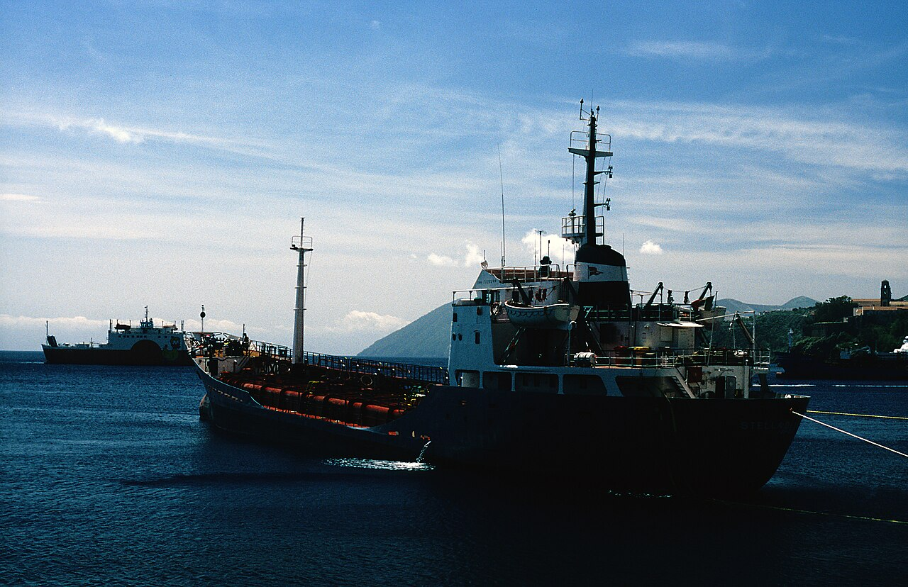
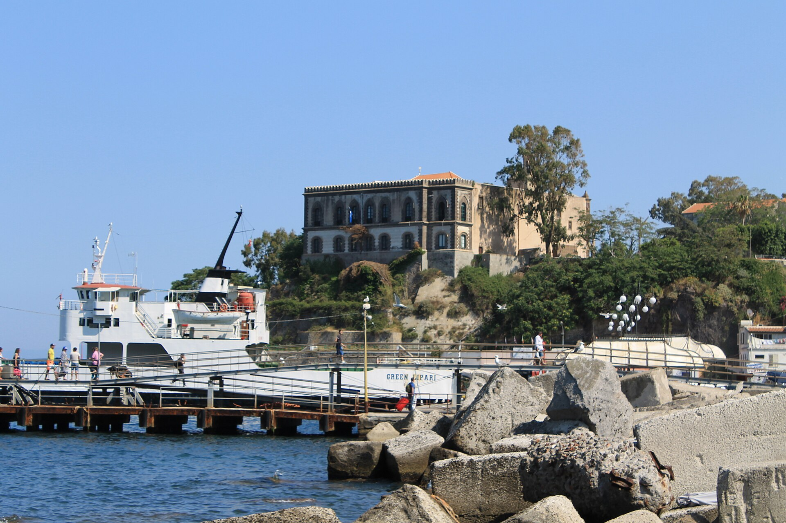

Lipari
By Carsten Steger - Own work, CC BY-SA 4.0
Lipari è la maggiore delle isole Eolie, capoluogo amministrativo e cuore logistico dell'intero arcipelago tirrenico. A differenza delle isole minori, possiede una rete stradale estesa che consente la regolare circolazione veicolare e trasporti pubblici urbani.
- Abitanti
nel comune - 12.794
- Istat, 1° gennaio 2026 (stima)
- Superficie
del comune - 90,14 km²
- Istat
Il sistema isola
Nel contesto del sistema insulare, Lipari funge da principale hub logistico e di smistamento per le Eolie. L'isola concentra le infrastrutture primarie necessarie a garantire l'autonomia energetica, idrica e di gestione dei flussi di merci e scarti per l'intera comunità eoliana.
Mobilità
La rete stradale e i mezzi
La viabilità di Lipari si distingue nettamente da quella delle altre isole eoliane grazie alla presenza di una rete stradale carrabile estesa che unisce il porto e il centro storico sia con le frazioni costiere, come Canneto e Acquacalda, sia con le località alte dell'entroterra come Pianoconte e Quattropani. Per gli spostamenti quotidiani, la popolazione e i visitatori utilizzano un mix consolidato di autovetture private, scooter, taxi locali e autobus di linea. Questo sistema di trasporto pubblico urbano garantisce il collegamento costante tra le zone residenziali, le spiagge e i punti nevralgici dell'isola.

Benjamín Núñez González, CC BY-SA 4.0, via Wikimedia Commons.
I collegamenti interni
La rete viaria montana si snoda attraverso i pendii di origine vulcanica, superando notevoli dislivelli altimetrici per collegare le aree abitate e le antiche zone produttive. Questa conformazione geologica complessa richiede interventi di manutenzione straordinaria e ordinaria continui da parte dell'amministrazione comunale per prevenire disagi e garantire la sicurezza della circolazione. Il monitoraggio costante delle strade è dunque un'operazione logistica essenziale per preservare l'accessibilità e la coesione dell'intero territorio liparoto.
Energia

Gaetano Giuffré, via Giornale di Lipari (GdL).
Centrale termoelettrica e fabbisogno
Il sistema energetico di Lipari non è collegato alla rete elettrica ad alta tensione della terraferma, configurandosi come un sistema isolato che richiede una produzione locale autonoma. Il fabbisogno elettrico dell'isola è storicamente soddisfatto da una centrale termoelettrica a gasolio da circa 22 MW situata nel centro abitato e gestita dalla Società Elettrica Liparese (S.E.L.), azienda storica attiva dal 1926 che cura in modo integrato la produzione, la distribuzione e la fornitura continua di energia per il territorio. Secondo i dati tecnici diffusi da ARERA ed ENEA, i consumi energetici registrano forti picchi nei mesi estivi a causa dei flussi turistici, spingendo verso l'installazione progressiva di impianti fotovoltaici e sistemi di accumulo per ridurre la dipendenza dai combustibili fossili.
Acqua
L'impianto di dissalazione
Per far fronte alla carenza naturale di risorse idriche, Lipari si affida primariamente a un impianto industriale di dissalazione in grado di convertire l'acqua marina in risorsa potabile. Questa infrastruttura tecnologica, gestita per conto della Regione Siciliana, copre il fabbisogno civile e commerciale quotidiano dell'isola, riducendo la dipendenza storica dai costosi trasporti via nave cisterna. Il trattamento delle acque avviene tramite processi avanzati che garantiscono standard di qualità rigorosi e conformi alle normative sanitarie.

Falk2, CC BY-SA 4.0, via Wikimedia Commons
Gestione delle risorse nei periodi di picco
Durante i mesi estivi, l'enorme afflusso turistico provoca un'impennata drastica dei consumi idrici che supera la capacità massima di produzione dell'impianto locale. Per evitare emergenze e garantire la continuità del servizio, il Comune attiva regolarmente il piano di approvvigionamento integrativo tramite navi cisterna autorizzate. Queste imbarcazioni riforniscono direttamente i serbatoi comunali di accumulo, compensando il deficit idrico stagionale e stabilizzando la distribuzione.
Rifiuti

Di Patrick Nouhailler's…, CC BY-SA 3.0, via Wikimedia Commons
Dalla raccolta alla terraferma
La gestione del ciclo dei rifiuti a Lipari è affidata a società specializzate che coordinano la raccolta differenziata porta a porta e i centri di raccolta comunali. L'impossibilità di trattare o smaltire localmente i rifiuti prodotti, aggravata dai forti picchi nei periodi di massima affluenza turistica, impone una complessa catena logistica marittima. I materiali raccolti vengono compattati, stoccati all'interno di cassoni e container stagni e imbarcati regolarmente su navi dedicate al trasporto rifiuti o sui traghetti di linea in partenza dai porti locali. Infine, i carichi vengono trasferiti sulla terraferma siciliana verso gli impianti autorizzati di recupero e smaltimento, completando così il ciclo della gestione insulare.